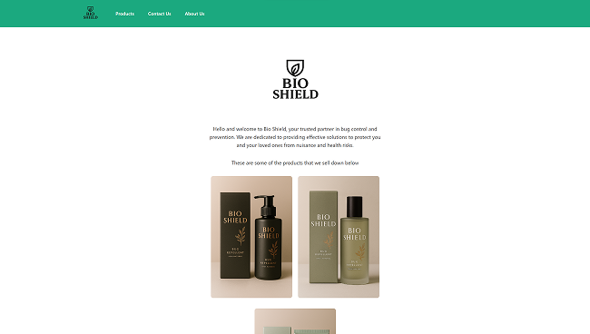
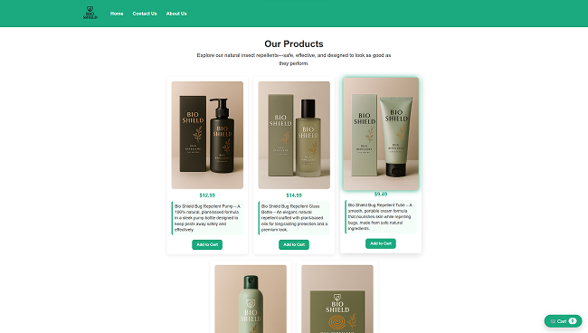
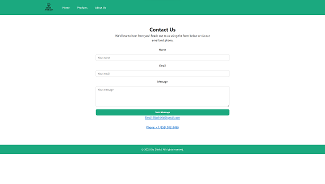
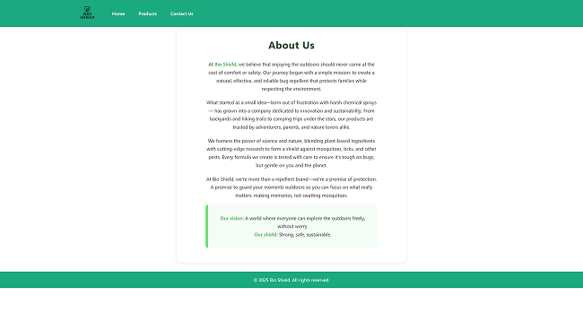

Website Images




Bioshield Overview:
Bioshield was the first major project that I and a partner were tasked to create to simulate a fake company advertising their variety of insect repellants. We had to create this project using A.I. to demonstrate our understanding of A.I as a collaborator.
Technology Used:
- I was introduced and used HTML, CSS, and JavaScript, however at the time I did not really know how to properly write code.
- I hosted this project on Netlify for other students to access.
- I had used A.I. platforms such as Chatgpt and Copilot.


Concepts Learned:
- I had learned how A.I. can do various tasks such as checking, writing, and explaining parts of your code making it easier for you.
- I had learned that although A.I. can assist you, it can still make mistakes that you need to understand yourself.
- I also learned that when handling code with a partner, you must ensure that you both make sure to not override each other's code to ensure there are no issues.
Challenges & Solutions:
- A massive problem that I had was that when my partner and I were combining our written code that we both worked on individually. It broke during the merging process and everything did not function properly. The solution to fix this issue was that I had to go back to our past contributions and grab whatever code I could find. After that I had to manually redo the code to ensure proper functionality.
- Another problem that I had was the style and theme of our project. My partner and I had zero clue on what and how the pages should look like. So the solution we had in mind was simple, to find inspiration from other peers and real insect repellant companies.
- We also had another problem in which we were trying to create a cart system in which it calculates the total amount of product you have along with the price of each item. The solution that we had was to look at the demo that our instructor had written along with asking A.I. and peers.

Habits of the mind in action
- Communication: I talked with my partner about many ideas I had along with features that I would like to be implemented.
- Collaboration: I worked on code with my partner while we both assisted each other whenever we needed
- Persistence: When the code broke and became un-funcionable, I used the remainder of my day trying to fix the code.